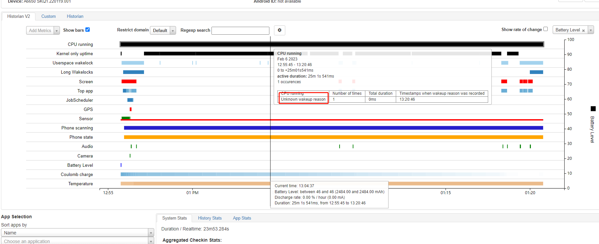

qcom qcm2290 功耗调试记录
记录一下qcm2290平台功耗调试记录。
系统无法休眠调试
先清掉bugreport，休眠一段时间并导出：
adb shell dumpsys batterystats --reset
adb shell dumpsys batterystats --enable full-wake-history
adb bugreport
首先抓取bugreport看一下，发现是内核持锁：

查看持锁如下ws_charge和4a84000.qcom,qup_uart：

ws_charge中的最后一个参数是1668485，prevent_suspend_time表示阻止系统休眠时间，基本上打开后就没进行释放。
A6650:/ # cat d/wakeup_sources | grep charge
pax-base-charger 2 2 0 0 0 74 37
6373 0
charger suspend wakelock 282 282 0 0 39 19702 323 1676089 0
pax-charger 7 7 0 0 0 1005 299 1284884 0
ws_charge 1 1 0 0 1668485 1668485 1668485
7643 0
ws_charge是在pax-battery-class.c中注册的wakelock，用于休眠后防止过放，通过计算放电时间唤醒系统，这个功能已经放到bms中做了。之所以持锁，是因为没有进行释放，干脆直接去掉。
--- a/UM.9.15/kernel/msm-4.19/drivers/misc/pax/power/pax_battery_class.c
+++ b/UM.9.15/kernel/msm-4.19/drivers/misc/pax/power/pax_battery_class.c
@@ -807,6 +807,7 @@ int pax_battery_set_status(int new_status)
status = POWER_SUPPLY_STATUS_NOT_CHARGING;
}
+#ifndef CONFIG_PAX_BMS
if (g_pax_battery_dev) {
if (status == POWER_SUPPLY_STATUS_CHARGING) {
if (!g_pax_battery_dev->ws_charge->active)
@@ -816,6 +817,7 @@ int pax_battery_set_status(int new_status)
__pm_relax(g_pax_battery_dev->ws_charge);
}
}
+#endif
pax_battery_sply.BAT_STATUS = status;
pax_battery_supply_changed();
@@ -989,7 +991,10 @@ struct pax_battery_device *pax_battery_device_register(const char *name,
return ERR_PTR(ret);
}
battery_dev->ops = ops;
+
+#ifndef CONFIG_PAX_BMS
battery_dev->ws_charge = wakeup_source_register(NULL, "ws_charge");
+#endif
g_pax_battery_dev = battery_dev;
另外关于锁4a84000.qcom,qup_uart是谢工改出来的，将串口改成了永不休眠，修改如下可避免：
--- a/UM.9.15/kernel/msm-4.19/drivers/tty/serial/msm_geni_serial.c
+++ b/UM.9.15/kernel/msm-4.19/drivers/tty/serial/msm_geni_serial.c
@@ -3636,7 +3636,7 @@ static int msm_geni_serial_probe(struct platform_device *pdev)
pm_runtime_set_suspended(&pdev->dev);
//[feature]-modify-begin xielianxiong@paxsz.com,20220826,for msm-geni-serial-hs uart close auto sleep
- pm_runtime_set_autosuspend_delay(&pdev->dev, -1);//150
+ pm_runtime_set_autosuspend_delay(&pdev->dev, 150);//150
去掉以上两个锁后系统正常进入休眠：

RTC中断每10分钟唤醒一次
发现机器休眠后没10分钟一次pm8xxx_rtc_alarm唤醒，如下：
pm2250.dtsi:
pm2250_rtc: qcom,pm2250_rtc {
compatible = "qcom,pm8941-rtc";
interrupts = <0x0 0x61 0x1 IRQ_TYPE_NONE>;
};
drivers/rtc/rtc-pm8xxx.c:
static irqreturn_t pm8xxx_alarm_trigger(int irq, void *dev_id) //中断处理，清中断
{
struct pm8xxx_rtc *rtc_dd = dev_id;
const struct pm8xxx_rtc_regs *regs = rtc_dd->regs;
unsigned int ctrl_reg;
int rc;
unsigned long irq_flags;
rtc_update_irq(rtc_dd->rtc, 1, RTC_IRQF | RTC_AF);
spin_lock_irqsave(&rtc_dd->ctrl_reg_lock, irq_flags);
/* Clear the alarm enable bit */
rc = regmap_read(rtc_dd->regmap, regs->alarm_ctrl, &ctrl_reg);
if (rc) {
spin_unlock_irqrestore(&rtc_dd->ctrl_reg_lock, irq_flags);
goto rtc_alarm_handled;
}
ctrl_reg &= ~regs->alarm_en;
rc = regmap_write(rtc_dd->regmap, regs->alarm_ctrl, ctrl_reg);
if (rc) {
spin_unlock_irqrestore(&rtc_dd->ctrl_reg_lock, irq_flags);
dev_err(rtc_dd->rtc_dev,
"Write to alarm control register failed\n");
goto rtc_alarm_handled;
}
spin_unlock_irqrestore(&rtc_dd->ctrl_reg_lock, irq_flags);
/* Clear RTC alarm register */
rc = regmap_read(rtc_dd->regmap, regs->alarm_ctrl2, &ctrl_reg);
if (rc) {
dev_err(rtc_dd->rtc_dev,
"RTC Alarm control2 register read failed\n");
goto rtc_alarm_handled;
}
ctrl_reg |= PM8xxx_RTC_ALARM_CLEAR;
rc = regmap_write(rtc_dd->regmap, regs->alarm_ctrl2, ctrl_reg);
if (rc)
dev_err(rtc_dd->rtc_dev,
"Write to RTC Alarm control2 register failed\n");
rtc_alarm_handled:
return IRQ_HANDLED;
}
static const struct rtc_class_ops pm8xxx_rtc_ops = { //rtc ops，给manager驱动用
.read_time = pm8xxx_rtc_read_time,
.set_time = pm8xxx_rtc_set_time,
.set_alarm = pm8xxx_rtc_set_alarm,
.read_alarm = pm8xxx_rtc_read_alarm,
.alarm_irq_enable = pm8xxx_rtc_alarm_irq_enable,
};
static int pm8xxx_rtc_probe(struct platform_device *pdev)
{
rtc_dd->rtc_alarm_irq = platform_get_irq(pdev, 0);
if (rtc_dd->rtc_alarm_irq < 0) {
dev_err(&pdev->dev, "Alarm IRQ resource absent!\n");
return -ENXIO;
}
rtc_dd->allow_set_time = of_property_read_bool(pdev->dev.of_node,
"allow-set-time");
rtc_dd->regs = match->data;
rtc_dd->rtc_dev = &pdev->dev;
rc = pm8xxx_rtc_enable(rtc_dd);
device_init_wakeup(&pdev->dev, 1);
/* Register the RTC device */
rtc_dd->rtc = devm_rtc_device_register(&pdev->dev, "pm8xxx_rtc", //注册rtc设备，ops注册
&pm8xxx_rtc_ops, THIS_MODULE);
if (IS_ERR(rtc_dd->rtc)) {
dev_err(&pdev->dev, "%s: RTC registration failed (%ld)\n",
__func__, PTR_ERR(rtc_dd->rtc));
return PTR_ERR(rtc_dd->rtc);
}
/* Request the alarm IRQ */
rc = devm_request_any_context_irq(&pdev->dev, rtc_dd->rtc_alarm_irq, //申请alarm 中断
pm8xxx_alarm_trigger,
IRQF_TRIGGER_RISING,
"pm8xxx_rtc_alarm", rtc_dd);
}
static const struct of_device_id pm8xxx_id_table[] = {
{ .compatible = "qcom,pm8921-rtc", .data = &pm8921_regs },
{ .compatible = "qcom,pm8018-rtc", .data = &pm8921_regs },
{ .compatible = "qcom,pm8058-rtc", .data = &pm8058_regs },
{ .compatible = "qcom,pm8941-rtc", .data = &pm8941_regs },
{ .compatible = "qcom,pmk8350-rtc", .data = &pmk8350_regs },
{ .compatible = "qcom,pm8916-rtc", .data = &pm8916_regs },
{ },
};
MODULE_DEVICE_TABLE(of, pm8xxx_id_table);
拔除LCD休眠功耗减小6ma
目前A6650项目发现底电流一共有24ma，LCD被拔除后减小6ma，那肯定是lcd的电没关，经fae确认是LCD偏置电压没关，偏置电压控制的是+-5.4V(AVDD/AVEE),A6650项目如下图：

M9200项目如下图：


M9200耗电因素
TP+SENSOR供电增加2ma
以下这个电会导致底电流增加2ma，但是不能去掉，tp和sensor共电，需要双击唤醒和抬起亮屏功能。

A6650反复等待IMEI写入，阻止休眠
cat节点/d/wake_sources没找到阻止进休眠的kernel wakelock，但是看bugreport就一个ril层的wakelock：


查看logcat发现一直在等待imei，导致没休眠：
02-06 08:02:23.832 2404 2404 D QtiImsExtConnector: onNullBinding componentName ComponentInfo{org.codeaurora.ims/org.codeaurora.ims.QtiImsExtService}
02-06 08:02:23.863 1355 2169 W PlatformGinkgo: PlatformGinkgo getImei():null
02-06 08:02:23.864 1355 2169 W PlatformGinkgo: wait for setImeiProp
02-06 08:02:24.280 1355 2168 W PlatformGinkgo: PlatformGinkgo getImei():null
02-06 08:02:24.280 1355 2168 W PlatformGinkgo: wait for setImeiProp
02-06 08:02:24.353 1355 2777 D CompatibilityInfo: mCompatibilityFlags - 0
02-06 08:02:24.353 1355 2777 D CompatibilityInfo: applicationDensity - 480
02-06 08:02:24.353 1355 2777 D CompatibilityInfo: applicationScale - 1.0
02-06 08:02:24.355 2534 2534 I QImsService: QtiImsExtService : QtiImsExtService created!
02-06 08:02:24.356 2534 2534 E QImsService: QtiImsExtService : QtiImsExtService, ImsService is not yet started retry.
02-06 08:02:24.356 2534 2534 E QImsService: QtiImsExtService : QtiImsExtService, ImsService is not yet started retry.
02-06 08:02:24.356 2534 2534 W QImsService: QtiImsExtService : onBind returned null
02-06 08:02:24.359 2404 2404 D QtiImsExtConnector: Attempt to bind QtiImsExt service returned with: true
02-06 08:02:24.359 2404 2404 D QtiImsExtConnector: onNullBinding componentName ComponentInfo{org.codeaurora.ims/org.codeaurora.ims.QtiImsExtService}
02-06 08:02:24.368 1355 2169 W PlatformGinkgo: PlatformGinkgo getImei():null
02-06 08:02:24.368 1355 2169 W PlatformGinkgo: wait for setImeiProp